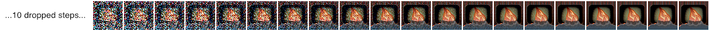
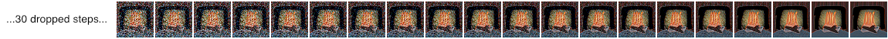
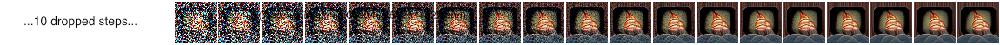

Image-to-Image#
Both the Web and command-line interfaces provide an "img2img" feature that lets you seed your creations with an initial drawing or photo. This is a really cool feature that tells stable diffusion to build the prompt on top of the image you provide, preserving the original's basic shape and layout.
See the WebUI Guide for a walkthrough of the img2img feature in the InvokeAI web server. This document describes how to use img2img in the command-line tool.
Basic Usage#
Launch the command-line client by launching invoke.sh/invoke.bat
and choosing option (1). Alternative, activate the InvokeAI
environment and issue the command invokeai.
Once the invoke> prompt appears, you can start an img2img render by
pointing to a seed file with the -I option as shown here:
tree on a hill with a river, nature photograph, national geographic -I./test-pictures/tree-and-river-sketch.png -f 0.85
| original image | generated image |
|---|---|
 |
 |
The --init_img (-I) option gives the path to the seed picture. --strength
(-f) controls how much the original will be modified, ranging from 0.0 (keep
the original intact), to 1.0 (ignore the original completely). The default is
0.75, and ranges from 0.25-0.90 give interesting results. Other relevant
options include -C (classification free guidance scale), and -s (steps).
Unlike txt2img, adding steps will continuously change the resulting image and
it will not converge.
You may also pass a -v<variation_amount> option to generate -n<iterations>
count variants on the original image. This is done by passing the first
generated image back into img2img the requested number of times. It generates
interesting variants.
Note that the prompt makes a big difference. For example, this slight variation on the prompt produces a very different image:

Tip
When designing prompts, think about how the images scraped from the internet were captioned. Very few photographs will be labeled "photograph" or "photorealistic." They will, however, be captioned with the publication, photographer, camera model, or film settings.
If the initial image contains transparent regions, then Stable Diffusion will
only draw within the transparent regions, a process called
inpainting.
However, for this to work correctly, the color information underneath the
transparent needs to be preserved, not erased.
IMPORTANT ISSUE
img2img does not work properly on initial images smaller
than 512x512. Please scale your image to at least 512x512 before using it.
Larger images are not a problem, but may run out of VRAM on your GPU card. To
fix this, use the --fit option, which downscales the initial image to fit within
the box specified by width x height:
How does it actually work, though?#
The main difference between img2img and prompt2img is the starting point.
While prompt2img always starts with pure gaussian noise and progressively
refines it over the requested number of steps, img2img skips some of these
earlier steps (how many it skips is indirectly controlled by the --strength
parameter), and uses instead your initial image mixed with gaussian noise as the
starting image.
Let's start by thinking about vanilla prompt2img, just generating an image
from a prompt. If the step count is 10, then the "latent space" (Stable
Diffusion's internal representation of the image) for the prompt "fire" with
seed 1592514025 develops something like this:
Put simply: starting from a frame of fuzz/static, SD finds details in each frame that it thinks look like "fire" and brings them a little bit more into focus, gradually scrubbing out the fuzz until a clear image remains.
When you use img2img some of the earlier steps are cut, and instead an
initial image of your choice is used. But because of how the maths behind Stable
Diffusion works, this image needs to be mixed with just the right amount of
noise (fuzz/static) for where it is being inserted. This is where the strength
parameter comes in. Depending on the set strength, your image will be inserted
into the sequence at the appropriate point, with just the right amount of noise.
A concrete example#
I want SD to draw a fire based on this hand-drawn image
Let's only do 10 steps, to make it easier to see what's happening. If strength
is 0.7, this is what the internal steps the algorithm has to take will look
like:
With strength 0.4, the steps look more like this:
Notice how much more fuzzy the starting image is for strength 0.7 compared to
0.4, and notice also how much longer the sequence is with 0.7:
| strength = 0.7 | strength = 0.4 | |
|---|---|---|
| initial image that SD sees |  |
|
steps argument to invoke> |
-S10 |
-S10 |
| steps actually taken | 7 |
4 |
| latent space at each step | ||
| output |  |
Both of the outputs look kind of like what I was thinking of. With the strength higher, my input becomes more vague, and Stable Diffusion has more steps to refine its output. But it's not really making what I want, which is a picture of cheery open fire. With the strength lower, my input is more clear, but Stable Diffusion has less chance to refine itself, so the result ends up inheriting all the problems of my bad drawing.
If you want to try this out yourself, all of these are using a seed of
1592514025 with a width/height of 384, step count 10, the default sampler
(k_lms), and the single-word prompt "fire":
The code for rendering intermediates is on my (damian0815's) branch
document-img2img -
run invoke.py and check your outputs/img-samples/intermediates folder while
generating an image.
Compensating for the reduced step count#
After putting this guide together I was curious to see how the difference would be if I increased the step count to compensate, so that SD could have the same amount of steps to develop the image regardless of the strength. So I ran the generation again using the same seed, but this time adapting the step count to give each generation 20 steps.
Here's strength 0.4 (note step count 50, which is 20 ÷ 0.4 to make sure SD
does 20 steps from my image):
and here is strength 0.7 (note step count 30, which is roughly 20 ÷ 0.7 to
make sure SD does 20 steps from my image):
In both cases the image is nice and clean and "finished", but because at
strength 0.7 Stable Diffusion has been give so much more freedom to improve on
my badly-drawn flames, they've come out looking much better. You can really see
the difference when looking at the latent steps. There's more noise on the first
image with strength 0.7:

than there is for strength 0.4:

and that extra noise gives the algorithm more choices when it is evaluating how to denoise any particular pixel in the image.
Unfortunately, it seems that img2img is very sensitive to the step count.
Here's strength 0.7 with a step count of 29 (SD did 19 steps from my image):
By comparing the latents we can sort of see that something got interpreted differently enough on the third or fourth step to lead to a rather different interpretation of the flames.

This is the result of a difference in the de-noising "schedule" - basically the noise has to be cleaned by a certain degree each step or the model won't "converge" on the image properly (see stable diffusion blog for more about that). A different step count means a different schedule, which means things get interpreted slightly differently at every step.
Created: September 11, 2022